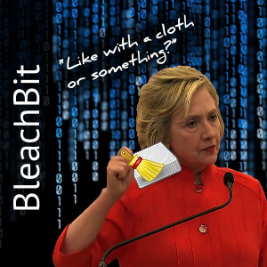

Cloth or Something

August 2015 Hillary Clinton was asked, "Did you wipe your email server?" and she evasively replied, "Like with a cloth or something?" A year later we found out that "cloth" was BleachBit, a software application that deletes information "so even God can't read it," as Congressman Trey Gowdy announced August 2016.
- After you have smashed your BlackBerry, don't forget to wipe the fingerprints from your email server with this non-abrasive, soft microfiber Cloth or Something.
- Thin, foldable size makes it easy to stash the Cloth or Something in burn bags.
- 6" x 6" size quickly wipes even the biggest email servers with thousands of emails.
- Optionally autographed on the back by Andrew, creator of BleachBit.
- Printed in the USA!
- Guaranteed not to prove intent, or you will get a full refund paid when you are released from prison.
- USPS first-class shipping and handling is a flat rate of $2 per order.
- Yes, this cloth is real, and you can really buy it.
- Frame it as a collectible or clean smudges from your eyeglasses, jewelry, smartphones, and tablets.
- Buy an extra cloth for your VIP (VERY VIP) client.
Andrew has appeared on interviews with Fox Business News, the Sean Hannity radio show, and others. Cloth or Something has been mentioned on the Fox News TV channel, FoxNews.com, Charles Tendell show, and many others.
Don't wait for a subpoena: Order Now!